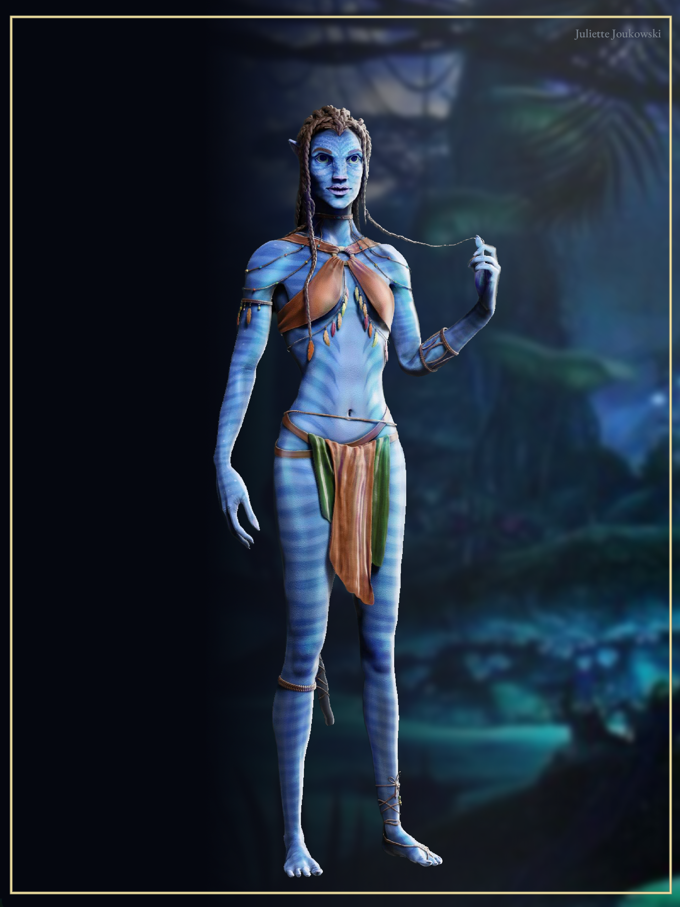
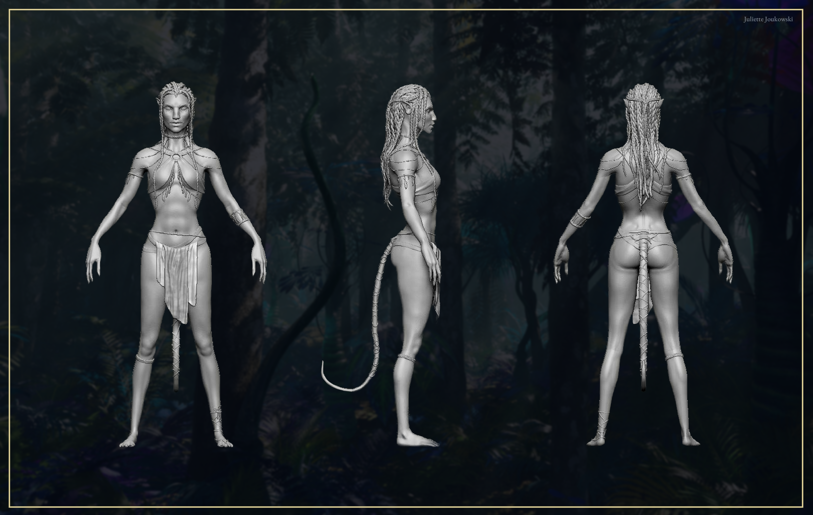
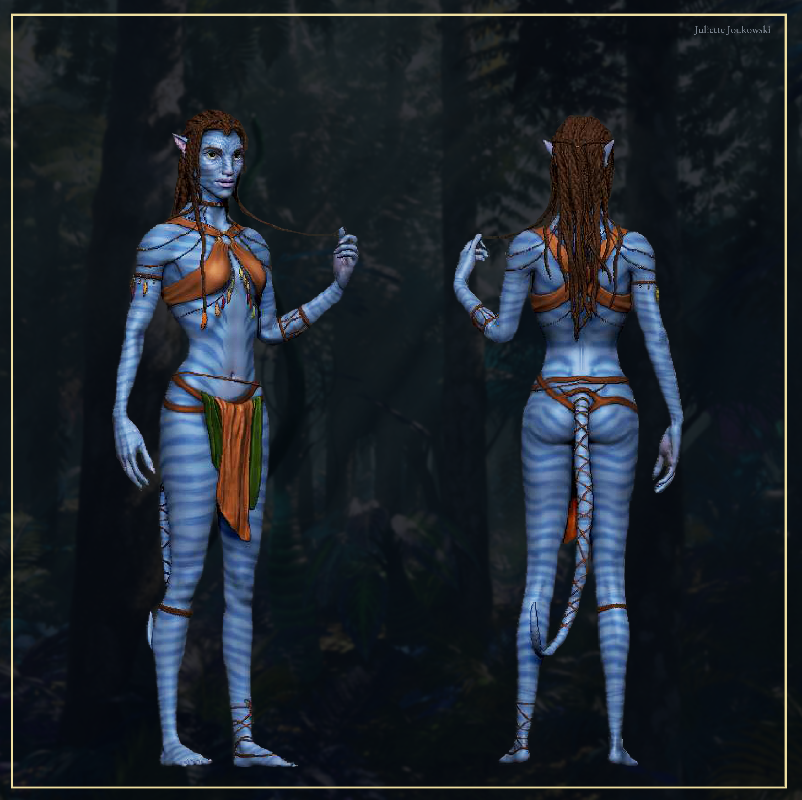
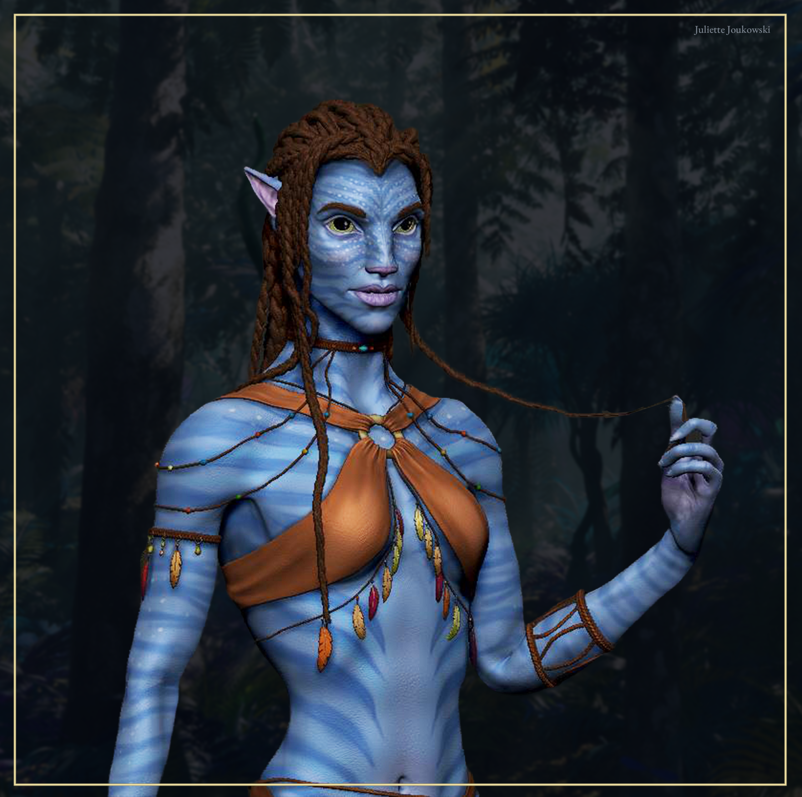

Original Character Design
This Na'vi is an original character imagined within the Avatar universe, not a recreation of an existing character from the films. Her face, skin markings, hairstyle, clothing and accessories were all designed from scratch, staying true to Na'vi anatomy and culture while giving her a distinct identity.

High Poly Sculpt
Full turnaround of the high poly sculpt, modeled entirely in ZBrush. Particular attention was given to Na'vi anatomy: elongated proportions, tail, ears and facial structure, alongside the braided hair, beaded jewelry and woven garments.

Coloring in ZBrush
The character was fully colorized directly in ZBrush with Polypaint, without a separate texturing package. This allowed the bioluminescent skin patterns, fabric and jewelry materials to be refined while staying close to the sculpt.

Facial Close-Up
A closer look at the facial sculpt and the hand-painted skin markings, designed specifically for this character rather than copied from an existing Na'vi.